Уровней стало 40, и эпоха теперь заканчивается по-настоящему
Добавлена эпоха «Хандар» (Жошы → Абылай) и «Ханымдар» (Зарина → Сорқақтани) —
сорок карточек реальных исторических личностей и ещё 120 вопросов.
Число эпох больше нигде не зашито: оно считается из длины списка героев,
и третья откроется сама, как только допишут контент.
было20-й уровень — такой же тест из шести вопросов.
Конец эпохи ничем не отличался от середины.
сталоДәуір сынағы: восемь вопросов, каждый из другого набора эпохи,
порог 6 из 8. Узел и кнопка золотые — финал видно заранее.
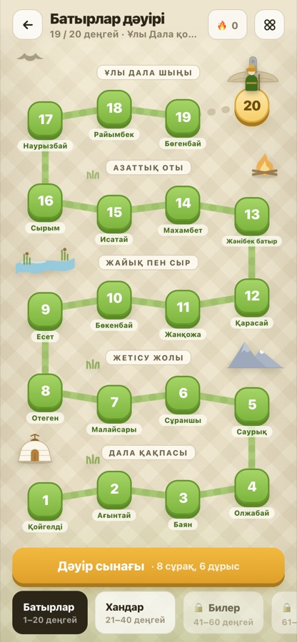
Золотой 20-й узел — испытание эпохи
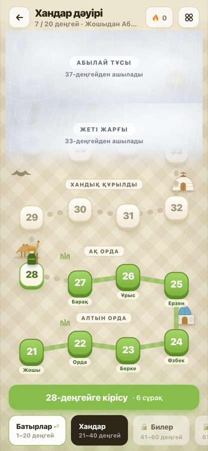
Вторая эпоха: свой декор — купол, караван, свиток
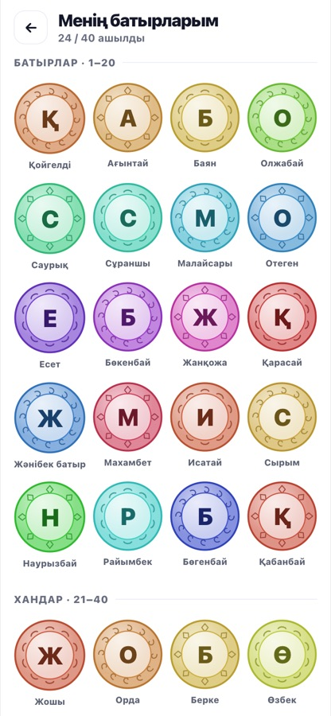
Коллекция с разделителем эпох, три орнамента медальонов
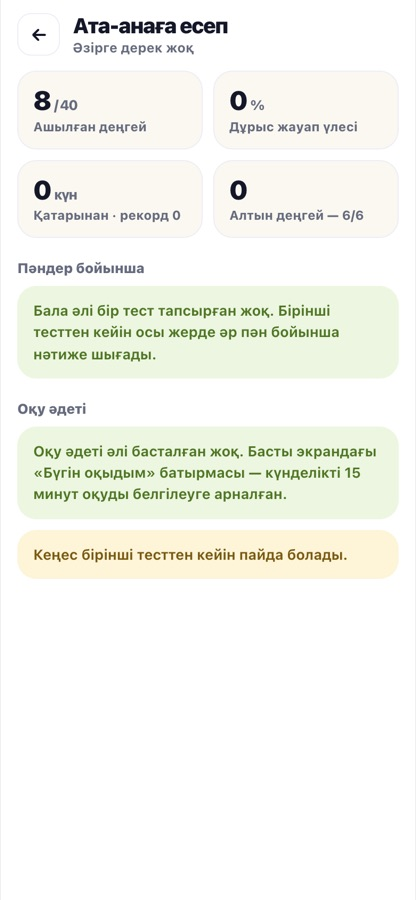
Отчёт родителю: слабый предмет первым
Что нашлось при сборке и было починено
Айғаным ханым стояла в обеих эпохах — один и тот же человек на двух уровнях.
Автотест не ловил: сравнивал первые слова имён.
Подписи узлов могли совпасть у четырёх пар героев. Теперь второе слово
добавляется только при совпадении, остальные 76 остаются короткими.
Брак в новом банке вопросов: четыре почти одинаковых вопроса про Present
Continuous, три пищевые цепи, темы вне программы 4–6 класса. Всё переписано,
все 40 ключей по математике и логике пересчитаны вручную.
2 · Ана кабинеті — уровень мамы вместо отчёта об оценках
Кабинет, который начинается с оценок ребёнка, — это источник тревоги,
которым невозможно поделиться.
Это вывод из акта работ за 1 июля — 9 августа. Здесь он превращён в экран:
первым идёт уровень мамы, а не успеваемость ребёнка. Если однажды блок
ребёнка окажется выше — упадёт автопроверка.
былоПервым экраном — проценты по предметам и место в классе.
Показать подруге такое нельзя.
сталоУровень мамы, задание недели, приз. Уровень никогда не падает.
Карточка для подруги — без имени, класса и оценок ребёнка.
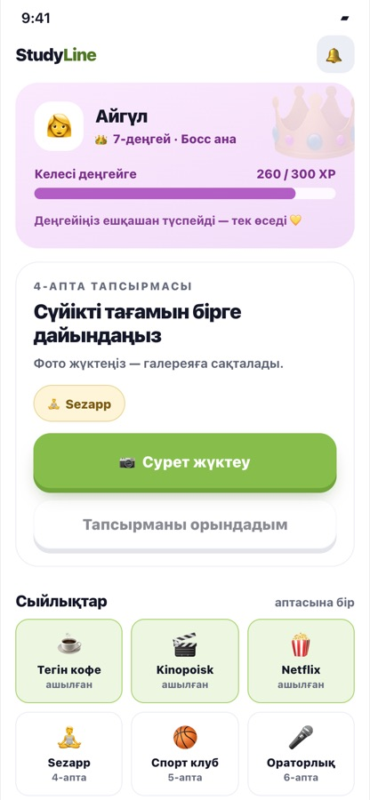
Уровень мамы первым экраном
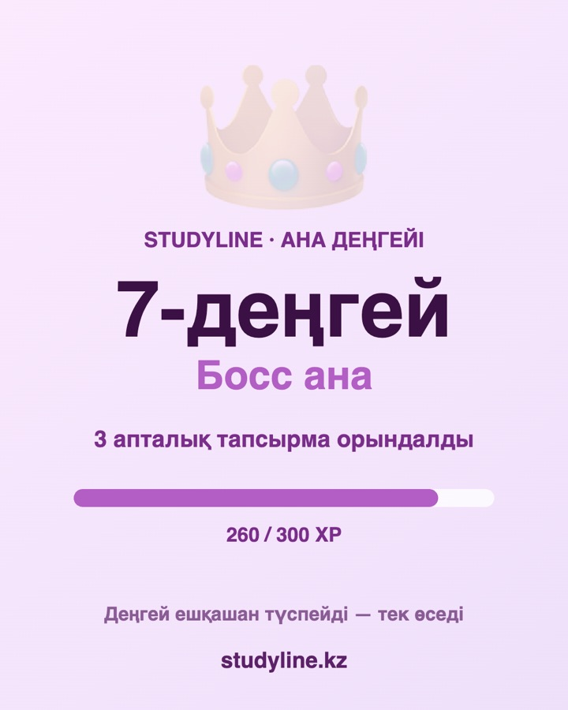
Сохраняется картинкой 1080×1350 — точка входа реферала
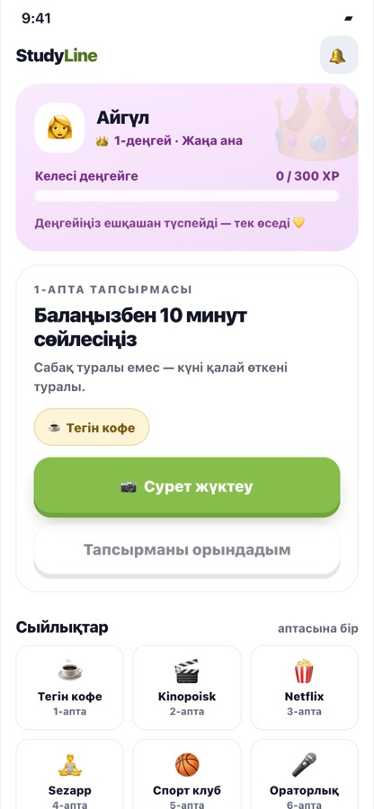
Как выглядит кабинет у новой семьи
3 · 1000 ағаш — из концепт-доски в рабочий экран
Переносилось две недели. Теперь работает целиком
Выбрать фото с телефона, отправить, дождаться проверки куратором и увидеть,
как выросли счётчик кампании, клан и город. Фото ужимается на клиенте
с 3–8 МБ до 40–80 КБ.
былоРаскадровка восьми экранов, которую нельзя потрогать.
сталоЛюбое фото сначала «тексерілуде». В общую ленту его
переводит только куратор — фото ребёнка не публикуется без проверки.
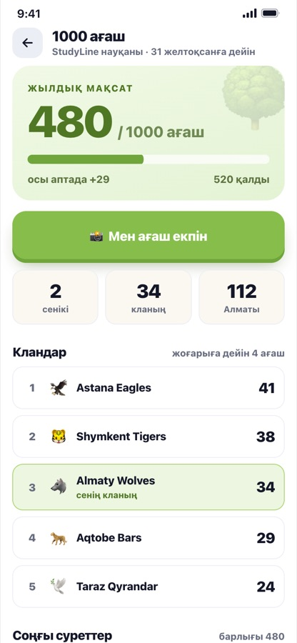
Счётчик, свой вклад, клан и город
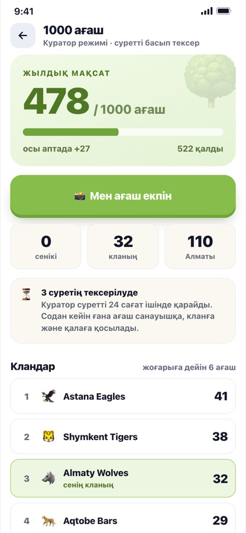
Режим куратора — модерация до публикации
4 · Клан — пять P0 из ревью заменены рабочими решениями
Не список «не делай так», а показ «вот так вместо этого»
Ревью 5 и 12 августа выдало пять P0 и три отсутствующих состояния.
Здесь на каждый пункт стоит работающая альтернатива и автопроверка,
которая упадёт при регрессе.
было«Не заходил 2 дня» красным на виду у класса.
Кнопка «Толкнуть» рядом с конкретным ребёнком. Полный список «кто сколько принёс».
Полные фамилии детей. Вход по коду без ограничений.
сталоАктивность видит только капитан и без числа дней.
Напоминание уходит всему клану анонимно. Вместо рейтинга — три номинации
и своя строка с действием. «Даниял С.» за пределами клана.
Код — приглашение, а не ключ.
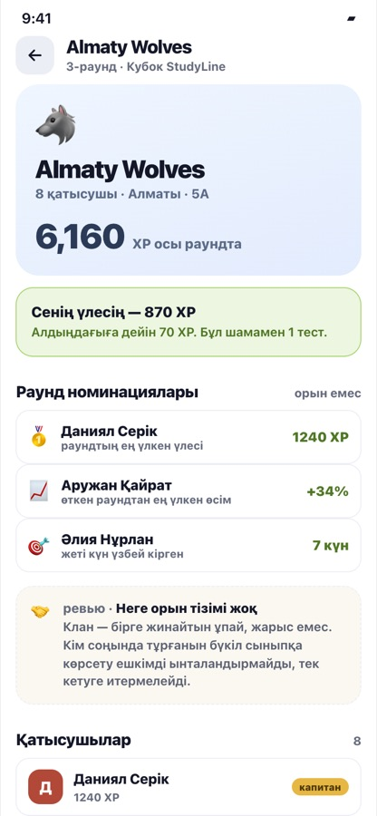
Номинации вместо рейтинга
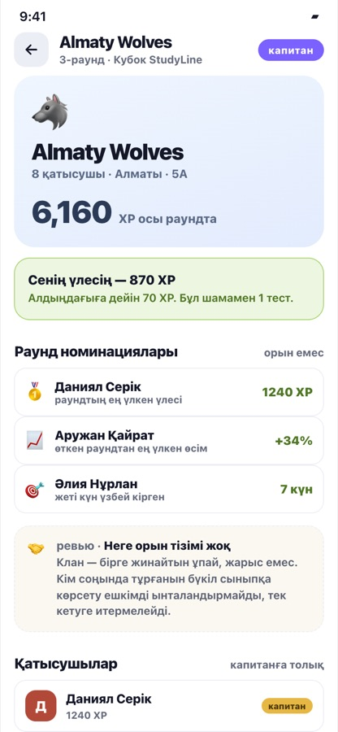
Активность — только у капитана
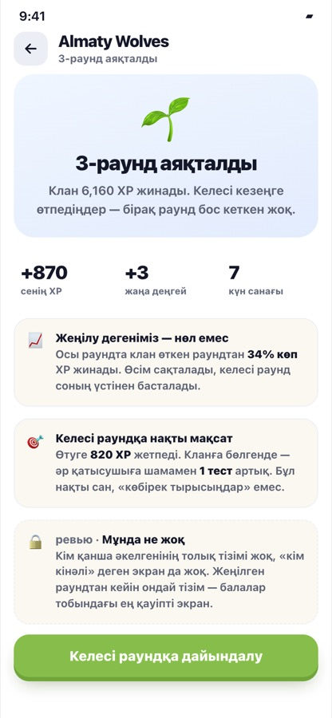
Экран проигравшего, которого не было ни на одном макете
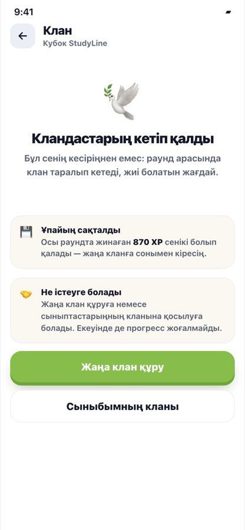
«Это не из-за тебя» — состояние, где ребёнок уходит
5 · Оқу әдеті — цепочка перестала рваться молча
былоРебёнок узнавал о разрыве цепочки, когда она уже оборвалась.
сталоПосле 18:00 — предупреждение с числом дней.
Терять «6 дней» жалко, терять «скоро» — нет.
Формат жёсткий: хук → условие → типичная ошибка → шаги →
ответ → почему именно так → CTA. Предпоследняя сцена обязательна:
без неё ребёнок запоминает ответ, а не правило.
Что честно не сделано
Ответы на все 240 вопросов лежат в исходнике страницы, а прогресс
подставляется параметром в адресной строке. До выноса на сервер показывать
«100 деңгей» посторонним нельзя. Это фокус недели 18–24 августа.
Figma не проверена — MCP-коннектор не подключён, скриншоты макетов
снять не удалось. Вместо них — лист сверки на 20 минут в ревью.
Третий видео-разбор без озвучки — на kie.ai закончились кредиты.
Сценарий и тайминги готовы, нужен один прогон после пополнения.
Фото и данные лежат в браузере. Всё, что здесь работает,
работает на одном устройстве — сервер это отдельная работа недели.